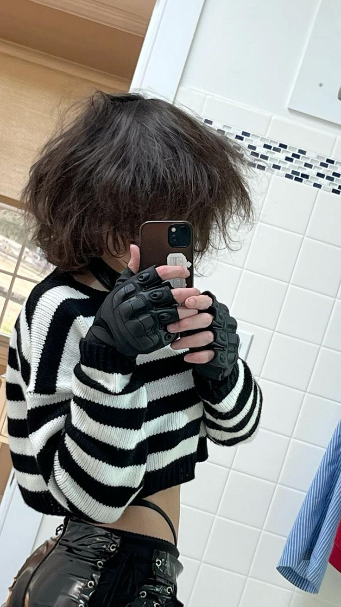
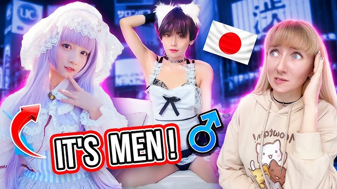
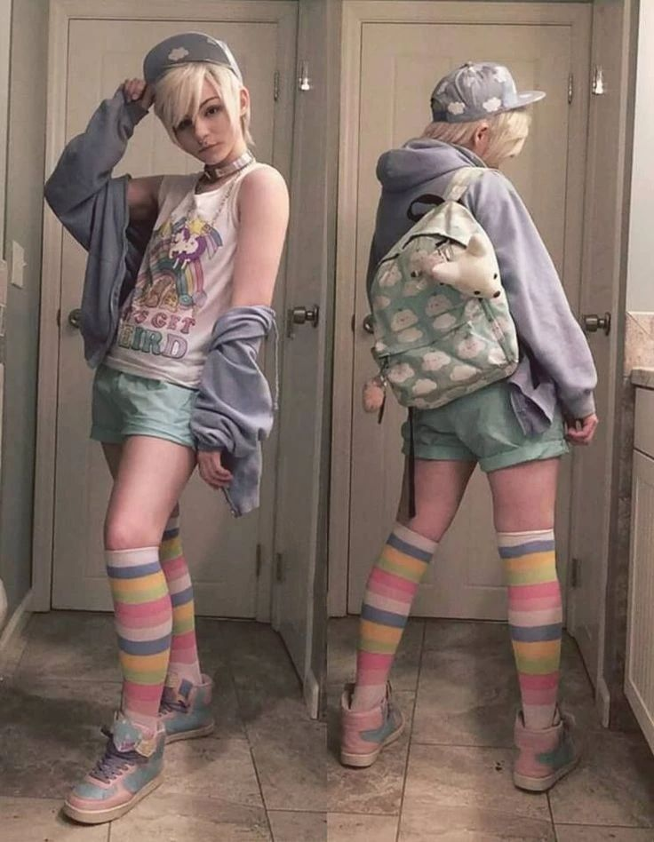
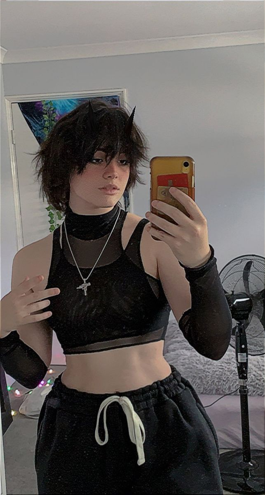
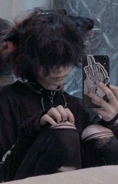
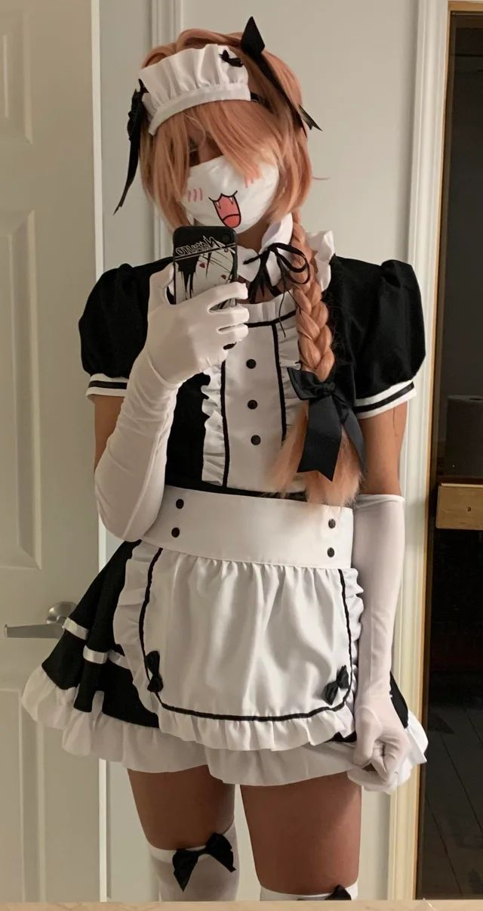

El término "femboy" se refiere a personas, generalmente hombres, que adoptan una estética y comportamiento considerados tradicionalmente femeninos. Su origen moderno se encuentra en subculturas en línea y comunidades de moda, donde la expresión de género fluida ha ganado visibilidad.
La historia de los femboys está ligada a movimientos de moda y cultura pop, especialmente en Japón con estilos como el "bishōnen" y en Occidente con la moda andrógina.
La cultura femboy abarca una amplia gama de expresiones, desde la moda hasta el arte y los medios. Las comunidades en línea, como las de Reddit y Discord, han sido fundamentales para su popularidad, proporcionando espacios seguros para la autoexpresión.
Los femboys suelen desafiar las normas de género tradicionales, promoviendo una visión más inclusiva de la masculinidad y la feminidad.
El movimiento femboy ha influido en la moda, el entretenimiento y las discusiones sobre género. Ha inspirado a muchas personas a explorar su identidad y a cuestionar los estereotipos tradicionales.
Su presencia en los medios ha ayudado a normalizar la diversidad de género y a fomentar conversaciones sobre la aceptación y la libertad de expresión.
